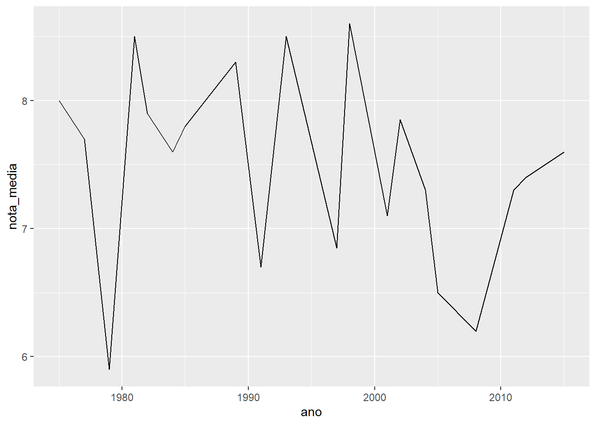
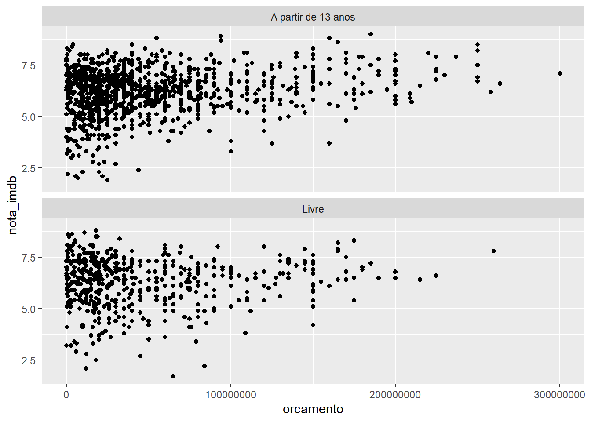

Visualizações em R
13/04/2020
Introdução
Em nosso primeiro encontro, vimos algumas funcionalidades de visualização base no R.
# Mtcars é um banco de dados pré-instalado no R sobre automóveis de 1973
plot(mtcars$mpg, mtcars$disp)
O R Base tem vários funções gráficas pré-programadas, como plot(), pie(), barplot(), etc. Você pode controlar vários parâmetros destes gráficos com par(). Uma boa referência para estas funções é o 7º capítulo de Zuur et al. (2009).
Mas a maior parte dos usuários de R hoje utiliza o ggplot2. Este pacote apresenta diversas vantagens, desde a (relativa) facilidade de uso até sua estética mais sofisticada, e é nele que vamos nos concentrar hoje. Este encontro se baseia no excelente material produzido pelo curso-r.com, disponível neste link.
ggplot2
ggplot2 é o resultado da tese de doutorado de Hadley Wickham, um dos principais nomes por trás da programação e popularização do R. A visualização é uma peça central do modelo de Ciência de Dados defendido por ele, e portanto, é necessário ter um pacote de ferramentas de visualização que seja ao mesmo tempo poderoso para fazer gráficos dignos de serem apresentados e publicados, mas também simples para que o analista possa utilizá-las cotidianamente para explorar seus dados.
Para tanto, o autor propôs separar a produção de gráficos em uma sequência de camadas mais ou menos independentes uma da outra. Essas camadas são dados, formas geométricas, escalas e fírulas. Ao invés de explicar o que são cada uma delas, vamos entendê-las na prática.
Para facilitar, vamos utilizar um banco de dados da Internet Movie Database (imdb), pois ele está organizado de uma forma que permite a produção de visualizações sem precisar manipulá-lo (muito).
A primeira camada de dados, se executada sozinha, retorna um quadrado em branco.

A segunda camada, de geometria, já nos retorna um gráfico simples. Vamos usar um gráfico de pontos de exemplo. Note que nós empilhamos nossas camadas com ‘+’.
## Warning: Removed 733 rows containing missing values (geom_point).
Note que cada ponto representa o encontro entre o valor do orçamento (x) e o valor da receita (y) de um filme. A função aes() é a nossa forma de comunicar ao ggplot que variáveis ficam responsáveis por quais aspectos estéticos (aesthetics).
Alguns dos geoms mais utilizados são:
- geom_line - para linhas definidas por pares (x,y).
- geom_abline - para retas definidas por um intercepto e uma inclinação.
- geom_hline - para retas horizontais.
- geom_bar - para barras.
- geom_histogram - para histogramas.
- geom_boxplot - para boxplots.
- geom_density - para densidades.
- geom_area - para áreas.Podemos colocar mais camadas no mesmo gráfico, se isso for interessante:
ggplot(imdb) +
geom_point(mapping = aes(x = orcamento, y = receita)) +
geom_abline(intercept = 0, slope = 1, color = "red")## Warning: Removed 733 rows containing missing values (geom_point).
O geom_abline recebe um valor para alpha (intercepto) de 0 e um valor para beta (inclinação) da curva de 1. Assim, a linha divide os pontos entre aqueles que se pagaram ou não. Ele também especificou que a cor da linha deveria ser vermelha (color = "red").
A partir daqui, precisamos transformar um pouco nosso banco de dados, o que faremos utilizando o dplyr. Não vamos entrar em detalhes no funcionamento deste pacote, mas se interessar, siga este link.
library(dplyr)
imdb %>% # Operador 'pipe', é como se fosse uma tubulação
# Primeiro argumento de mutate é "data",
# mas pela tubulação já veio imdb,
# então não precisa digitar
mutate( # mutate serve para criar ou alterar variáveis
lucro = receita - orcamento,
lucro = ifelse(lucro <= 0, "Não", "Sim") # filmes que deram lucro
) %>% # Resultado do mutate passa pra frente
filter(!is.na(lucro)) %>% # filter é tipo '[]' pros casos
# ggplot já recebeu o resultado pela tubulação
ggplot() +
# Veja que agora, além de especificar que variáveis são x ou y,
# específica ainda uma variável que controla a cor do ponto
geom_point(mapping = aes(x = orcamento, y = receita, color = lucro))
Vejam que ele até criou uma legenda automática ali, à direta.
A terceira coisa com a qual podemos mexer, são as fírulas para apresentação do gráfico, como títulos de eixos, da legenda, etc. Fazemos isso adicionando mais uma camada ao nosso gráfico.
imdb %>%
mutate(
lucro = receita - orcamento,
lucro = ifelse(lucro <= 0, "Não", "Sim")
) %>%
filter(!is.na(lucro)) %>%
ggplot() +
geom_point(mapping = aes(x = orcamento, y = receita, color = lucro)) +
# Nova camada, o resto é igual
labs(x = "Orçamento", y = "Arrecadação", color = "Houve lucro?") 
Com labs(), podemos especificamos as etiquetas (labels) dos eixos, título, subtítulo, título da legenda, etc.
Atributos estéticos aes()
Note que quando utilizou-se color = lucro, estava-se relacionando os atributos estéticos do gráfico com o banco de dados no qual ele se baseia. Os aspectos visuais mais utilizados são:
- color=: altera a cor de formas que não têm área (pontos e retas).
- fill=: altera a cor de formas com área (barras, caixas, densidades, áreas).
- size=: altera o tamanho de formas.
- type=: altera o tipo da forma, geralmente usada para pontos.
- linetype=: altera o tipo da linha.Um detalhe importante é que se você chamar um desses dentro de aes(), ele vai ter um comportamento, mas fora dela, ele tem outro. Veja o seguinte exemplo:
## Warning: Removed 733 rows containing missing values (geom_point).
## Warning: Removed 733 rows containing missing values (geom_point).
Isso ocorre porque em aes() ele espera encontrar variáveis com valores múltiplos, e isso divide o gráfico de acordo com a estética selecionada. Mas fora de aes() ele espera encontrar valores, que servem para modificar diretamente apenas a apresentação do gráfico.
Exemplos de gráficos diferentes
Linhas
# Joga imdb no cano
imdb %>%
# Filtra os casos em que o diretor é o Spielberg
filter(diretor == "Steven Spielberg") %>%
# Agrupa esses casos por ano
group_by(ano) %>%
# Calcula uma nota média para cada ano
summarise(nota_media = mean(nota_imdb, na.rm = TRUE)) %>%
# Joga o resultado no cano
ggplot() +
# Faz uma linha com o ano no eixo X e a nota média no eixo y
geom_line(aes(x = ano, y = nota_media))## `summarise()` ungrouping output (override with `.groups` argument)
Histograma
ggplot(imdb) +
# Note que as especificações de cor e preenchimento estão fora de aes()
geom_histogram(aes(x = orcamento), color = "black", fill = "white")## `stat_bin()` using `bins = 30`. Pick better value with `binwidth`.## Warning: Removed 298 rows containing non-finite values (stat_bin).Histogramas só pedem o eixo x, pois o eixo y é a contagem dos casos em cada categoria de X.
Boxplot
# Joga o imdb no cano
imdb %>%
# Só os casos em que os diretores são um desses 3
filter(diretor %in% c("Steven Spielberg", "Quentin Tarantino", "Woody Allen")) %>% # Joga esse resultado no cano
ggplot() +
# Faça um boxplot da variável "receita"
# para cada valor da variável "diretor"
geom_boxplot(aes(x = diretor, y = receita))## Warning: Removed 4 rows containing non-finite values (stat_boxplot).Gráfico de barras
Há dois tipos de gráfico de barras no ggplot, um é parecido com o histograma, pois apresenta contagens de casos:
# Joga o imdb no cano
imdb %>%
# Só os filmes que saíram depois de 1990
filter(ano > 1990) %>%
# Joga os resultados no cano
ggplot() +
# Como no histograma, só o X, o resto é estético
geom_bar(aes(x = ano), color = "black", fill = "light blue")
O outro tipo de gráfico recebe valores mesmo para o eixo Y.
# Joga imdb no cano
imdb %>%
# Conta quantos filmes cada diretor fez
count(diretor) %>%
# Filtra os diretores que não fizeram nenhum filme
filter(!is.na(diretor)) %>%
# Pega os 5 mais prolíficos
dplyr::top_n(5, n) %>%
# Joga o resultado no cano
ggplot() +
geom_bar(
aes(x = diretor, y = n),
stat = "identity", # Não faça nenhuma operação estatística
color = "red",
fill = "pink"
)
Veja que ele pegou 6 e não 5, porque?
Juntando gráficos
É possível reunir várias visualizações em um mesmo painel, ou utilizar-se de ferramentas para imprimir diferentes gráficos lado-a-lado.
Vários geoms no mesmo gráfico
Podemos desenhar vários tipos de geometria no mesmo painel, desde que respeitemos um pouco de bom senso em relação à poluição visual e que isto represente alguma relação entre o que está sendo representado.
ggplot(imdb) +
geom_point(aes(x = orcamento, y = receita)) +
# Desenha uma linha a partir de um procedimento estatístico
# No caso, um modelo linear de regressão - 'method = "lm"'
# 'se = FALSE' é para que ele não desenhe o intervalo de confiança
geom_smooth(aes(x = orcamento, y = receita), se = FALSE, method = "lm")## `geom_smooth()` using formula 'y ~ x'## Warning: Removed 733 rows containing non-finite values (stat_smooth).## Warning: Removed 733 rows containing missing values (geom_point).
Podemos desenhar o mesmo gráfico anterior, mas economizar um pouco a digitação, passando os nossos critérios estéticos diretamente na chamada da função ggplot(). Fica assim:
# Note onde está aes()
ggplot(imdb, aes(x = orcamento, y = receita)) +
geom_point() +
geom_smooth(se = FALSE, method = "lm")## `geom_smooth()` using formula 'y ~ x'## Warning: Removed 733 rows containing non-finite values (stat_smooth).## Warning: Removed 733 rows containing missing values (geom_point).
Assim, todos os geoms vão seguir os mesmos critérios aestéticos, à menos que você especifique o contrário.
Utilizando uma variável para dividir o seu dado em facetas
Facetas (facets) são painéis distintos para o mesmo banco de dados, assim ele vai plotar um gráfico para cada valor da variável que foi “facetada”.
# Imdb no cano
imdb %>%
# Só os casos com classificação livre ou 13+
filter(classificacao %in% c("Livre", "A partir de 13 anos")) %>%
# Joga no cano
ggplot() +
# gráfico de orçamento por nota
geom_point(aes(x = orcamento, y = nota_imdb)) +
# uma faceta para cada classificação
facet_wrap(~classificacao, nrow = 2)## Warning: Removed 85 rows containing missing values (geom_point).
Cada pedaço do banco de dados foi plotado em um gráfico diferente, o primeiro tem só os casos de filmes para adolescentes, o segundo tem os filmes de classificação livre.
Aqui vocês podem ver o mesmo gráfico, mas ao invés de usar nrow na faceta, usou-se ncol:
imdb %>%
filter(classificacao %in% c("Livre", "A partir de 13 anos")) %>%
ggplot() +
geom_point(aes(x = orcamento, y = nota_imdb)) +
facet_wrap(~classificacao, ncol = 2)## Warning: Removed 85 rows containing missing values (geom_point).
No primeiro caso, ele pediu que as facetas fossem organizadas em linhas (rows) e no segundo, em colunas (cols).
Juntando gráficos diferentes no mesmo painel
As vezes, por uma exigência estética ou de espaço na folha, você quer colocar vários gráficos dividindo o mesmo espaço. Então, recorra a alguns pacotes que ampliam a funcionalidade do ggplot.
library(patchwork)
p1 <- imdb %>%
filter(diretor == "Steven Spielberg") %>%
group_by(ano) %>%
summarise(nota_media = mean(nota_imdb, na.rm = TRUE)) %>%
ggplot() +
geom_line(aes(x = ano, y = nota_media))## `summarise()` ungrouping output (override with `.groups` argument)p2 <- imdb %>%
mutate(lucro = receita - orcamento) %>%
filter(diretor == "Steven Spielberg") %>%
ggplot() +
geom_histogram(
aes(x = lucro),
fill = "lightblue",
color = "darkblue",
binwidth = 100000000
)
p1 + p2## Warning: Removed 1 rows containing non-finite values (stat_bin).Mesmo os gráficos sendo diferentes, o patchwork imprime eles na mesma fígura. Na documentação do patchwork você pode descobrir mais sobre como ajustar os detalhes.
Personalização
Por fim, precisamos personalizar os nossos gráficos, para que eles fiquem bonitos e autoexplicativos. Vamos partir de um gráfico base que vai ser alterado paulatinamente. Vejam que se vocês olharem para o código final, pode parecer que é um bixo de sete-cabeças, mas lembrem-se da “gramática” do ggplot, são camadas que vão sendo adicionadas pouco a pouco, como um bolo de confeiteiro bem complexo, feito passo a passo.
imdb %>%
filter(diretor %in% c("Steven Spielberg", "Quentin Tarantino", "Woody Allen")) %>%
ggplot() +
geom_boxplot(aes(x = diretor, y = receita, fill = diretor))## Warning: Removed 4 rows containing non-finite values (stat_boxplot).
Removendo a legenda:
Veja dentro de geom_boxplot, ele passa o argumento show.legend = FALSE.
imdb %>%
filter(diretor %in% c("Steven Spielberg", "Quentin Tarantino", "Woody Allen")) %>%
ggplot() +
geom_boxplot(aes(x = diretor, y = receita, fill = diretor), show.legend = FALSE)## Warning: Removed 4 rows containing non-finite values (stat_boxplot).
Escalas
Para mudar qualquer aspecto das escalas, utiliza-se a família de funções scale_X_Y().
Aqui, ao chamar scale_y_continuous, ele especifíca que as etiquetas no eixo y (que é uma variável contínua) devem ser escritas como um valor em dólares.
imdb %>%
filter(diretor %in% c("Steven Spielberg", "Quentin Tarantino", "Woody Allen")) %>%
ggplot() +
geom_boxplot(aes(x = diretor, y = receita, fill = diretor), show.legend = FALSE) +
scale_y_continuous(labels = scales::dollar)## Warning: Removed 4 rows containing non-finite values (stat_boxplot).Mudando a ordem das categorias
Agora, a função scale_x_discrete está alterando as categorias no eixo x, o objeto é reordená-las.
imdb %>%
filter(diretor %in% c("Steven Spielberg", "Quentin Tarantino", "Woody Allen")) %>%
ggplot() +
geom_boxplot(aes(x = diretor, y = receita, fill = diretor), show.legend = FALSE) +
scale_y_continuous(labels = scales::dollar) +
scale_x_discrete(
limits = c("Woody Allen", "Quentin Tarantino", "Steven Spielberg")
)## Warning: Removed 4 rows containing non-finite values (stat_boxplot).Alteração das cores
Geralmente, no ggplot2 há maneiras de especificar escalas de cores para seus dados, mas é comum a gente querer passar as cores manualmente mesmo. Nesse caso, ele está utilizando códigos de cor em valores hexadecimais (veja este exemplo.
imdb %>%
filter(diretor %in% c("Steven Spielberg", "Quentin Tarantino", "Woody Allen")) %>%
ggplot() +
geom_boxplot(aes(x = diretor, y = receita, fill = diretor), show.legend = FALSE) +
scale_y_continuous(labels = scales::dollar) +
scale_x_discrete(
limits = c("Woody Allen", "Quentin Tarantino", "Steven Spielberg")
) +
scale_fill_manual(values = c("#999999", "#E69F00", "#56B4E9"))## Warning: Removed 4 rows containing non-finite values (stat_boxplot).Modificando elementos do gráfico
Você pode querer alterar visualmente seu gráfico ainda mais, e aqui entramos num território praticamente infinito de customização, mas apenas como exemplo, ele quis remover tanto os nomes, quanto as marcações do eixo X.
imdb %>%
filter(diretor %in% c("Steven Spielberg", "Quentin Tarantino", "Woody Allen")) %>%
ggplot() +
geom_boxplot(aes(x = diretor, y = receita, fill = diretor)) +
scale_y_continuous(labels = scales::dollar) +
scale_x_discrete(
limits = c("Woody Allen", "Quentin Tarantino", "Steven Spielberg")
) +
scale_fill_manual(values = c("#999999", "#E69F00", "#56B4E9")) +
theme(axis.text.x = element_blank(), axis.ticks.x = element_blank())## Warning: Removed 4 rows containing non-finite values (stat_boxplot).
Todos os elementos do gráfico no ggplot são construídos a partir de “elementos”, e se você souber o que está fazendo, pode manipular estes elementos diretamente. Nese caso, ele apenas removeu alguns elementos do gráfico, mas você pode alterar praticamente tudo e criar gráficos totalmente customizados que não são possíveis em softwares proprietários, como Excel, SAS, SPSS, etc.
Posição da legenda
imdb %>%
filter(diretor %in% c("Steven Spielberg", "Quentin Tarantino", "Woody Allen")) %>%
ggplot() +
geom_boxplot(aes(x = diretor, y = receita, fill = diretor)) +
scale_y_continuous(labels = scales::dollar) +
scale_x_discrete(
limits = c("Woody Allen", "Quentin Tarantino", "Steven Spielberg")
) +
scale_fill_manual(values = c("#999999", "#E69F00", "#56B4E9")) +
theme(
axis.text.x = element_blank(),
axis.ticks.x = element_blank(),
legend.position = "bottom"
)## Warning: Removed 4 rows containing non-finite values (stat_boxplot).
A única mudança é o legend.position.
Temas pré-definidos
Pra dar um estilão diferente pro seu gráfico, você pode especificar um desses temas, só tome cuidado pois dependendo de onde você chama o tema (começo, meio, fim, ele pode bagunçar outras alterações que você já fez).
imdb %>%
filter(diretor %in% c("Steven Spielberg", "Quentin Tarantino", "Woody Allen")) %>%
ggplot() +
geom_boxplot(aes(x = diretor, y = receita, fill = diretor), show.legend = FALSE) +
scale_y_continuous(labels = scales::dollar) +
scale_x_discrete(
limits = c("Woody Allen", "Quentin Tarantino", "Steven Spielberg")
) +
scale_fill_manual(values = c("#999999", "#E69F00", "#56B4E9")) +
theme_bw()## Warning: Removed 4 rows containing non-finite values (stat_boxplot).O theme_bw deixa o gráfico num constrate legal de preto e branco, tirando aquele fundo cinza-claro padrão.
imdb %>%
filter(diretor %in% c("Steven Spielberg", "Quentin Tarantino", "Woody Allen")) %>%
ggplot() +
geom_boxplot(aes(x = diretor, y = receita, fill = diretor), show.legend = FALSE) +
scale_y_continuous(labels = scales::dollar) +
scale_x_discrete(
limits = c("Woody Allen", "Quentin Tarantino", "Steven Spielberg")
) +
scale_fill_manual(values = c("#999999", "#E69F00", "#56B4E9")) +
theme_minimal()## Warning: Removed 4 rows containing non-finite values (stat_boxplot).O theme_minimal() é para aquele hipster minimalista que mora com você (ou em você).
imdb %>%
filter(diretor %in% c("Steven Spielberg", "Quentin Tarantino", "Woody Allen")) %>%
ggplot() +
geom_boxplot(aes(x = diretor, y = receita, fill = diretor), show.legend = FALSE) +
scale_y_continuous(labels = scales::dollar) +
scale_x_discrete(
limits = c("Woody Allen", "Quentin Tarantino", "Steven Spielberg")
) +
scale_fill_manual(values = c("#999999", "#E69F00", "#56B4E9")) +
theme_dark()## Warning: Removed 4 rows containing non-finite values (stat_boxplot).O theme_dark() é pra quando você quer deixar seu gráfico mais amigável pra quem tem fotofobia e acaba zerando seu cartucho de tinta preta.
Título do gráfico
imdb %>%
filter(diretor %in% c("Steven Spielberg", "Quentin Tarantino", "Woody Allen")) %>%
ggplot() +
geom_boxplot(aes(x = diretor, y = receita, fill = diretor), show.legend = FALSE) +
scale_y_continuous(labels = scales::dollar) +
scale_x_discrete(
limits = c("Woody Allen", "Quentin Tarantino", "Steven Spielberg")
) +
scale_fill_manual(values = c("#999999", "#E69F00", "#56B4E9")) +
theme_minimal() +
ggtitle("Meu boxplot bonitão")## Warning: Removed 4 rows containing non-finite values (stat_boxplot).Também dá pra fazer o mesmo em labs()
imdb %>%
filter(diretor %in% c("Steven Spielberg", "Quentin Tarantino", "Woody Allen")) %>%
ggplot() +
geom_boxplot(aes(x = diretor, y = receita, fill = diretor), show.legend = FALSE) +
scale_y_continuous(labels = scales::dollar) +
scale_x_discrete(
limits = c("Woody Allen", "Quentin Tarantino", "Steven Spielberg")
) +
scale_fill_manual(values = c("#999999", "#E69F00", "#56B4E9")) +
theme_minimal() +
labs(title = "Meu boxplot bonitão")## Warning: Removed 4 rows containing non-finite values (stat_boxplot).
Amei, onde eu assino?
Se você quiser ir mais a fundo no ggplot, aqui vão alguns links legais:
R-Cookbook é um excelente livro de referência para você ter aberto enquanto programa no R para sempre. Sabe aquela dúvida que você teve e você tem certeza que já viu em algum lugar como faz? Pronto, no R-Cookbook está lá organizadinho por seções pra você resolver na hora. Não só pro ggplot2, mas pra muitas coisas em R!
R for Data Science um livraço (em inglês) pra começar a aprender R ou pra ir lendo aos poucos, de acordo com o seu aprendizado. O capítulo 3, de visualizações, dá um tutorial um pouco nessa linha.
Curso-R já citado no início, é um site de cursos pagos de R, mas com materiais gratuitos disponíveis para auto-estudo, fortemente inspirado no R for Data Science.
ggplot2 extensions é um site (em inglês) que concentra todo tipo de pacote voltado para estender as funcionalidades do ggplot2.
Exercícios
Vamos utilizar o banco de dados da região metropolitana de Campinas, "RMC.csv".
- Considerando o código:
Porque ele não imprimiu corretamente a cor azul?
O que aconteceu se você rodar
ggplot(data = rmc).Faça um gráfico de barras para a condição migratória separado em cores:
- Por município
- Por idade
- Por sexo
- Por nível de instrução
Este gráfico de barras empilhadas não facilita a comparação entre as categorias, como poderiamos desempilhar as barras?
Porque a visualização por idade não funcionou corretamente?
Considerações finais
Fazer um bom gráfico é, acima de tudo, um exercício de paciência e dedicação. É necessário pensar no que você deseja apresentar, quais são as exigências técnicas e estéticas que você procura atender e, a partir daí, reorganizar o seu banco de dados para que ele apresente os resultados, desenhar e implementar o código no ggplot que resulta no gráfico que você está buscando.
O objetivo de hoje era demonstrar a capacidade do ggplot de produzir visualizações bonitas e permitir que vocês dessem um primeiro passo no aprendizado. Decidi utilizar um material já praticamente pronto justamente pelo investimento de tempo necessário para produzir boas visualizações. Não é uma tarefa fácil.
Com o tempo, o que parece muito complexo passa a vir com maior naturalidade e você passa a fluentemente conseguir expressar seus resultados visualmente utilizando esta “gramática de gráficos”.
Copyright © 2020 Vinícius Maia. Nenhum Direito a menos.